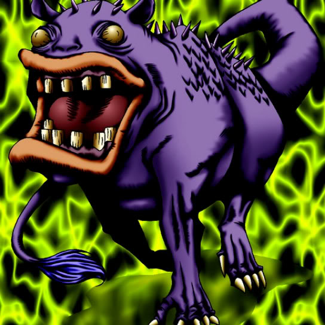

Ooguchi

Description: "Teleports to opponent's Summoning Area when this card is flipped face-up. When this card is flipped in battle, that battle is canceled."
STATS
ATK: 300
DEF: 250DECK COST
Deck Cost per Card: 11EFFECT NOT IMPLEMENTED
Fusion List (7 Possible Fusions)
- Ooguchi + Bolt Penguin = Bolt Escargot
- Ooguchi + Kaminarikozou = Bolt Escargot
- Ooguchi + LaLa Li-oon = Bolt Escargot
- Ooguchi + Mega Thunderball = Bolt Escargot
- Ooguchi + One-Eyed Shield Dragon = Spike Seadra
- Ooguchi + Oscillo Hero #2 = Bolt Escargot
- Ooguchi + Psychic Kappa = Hyosube